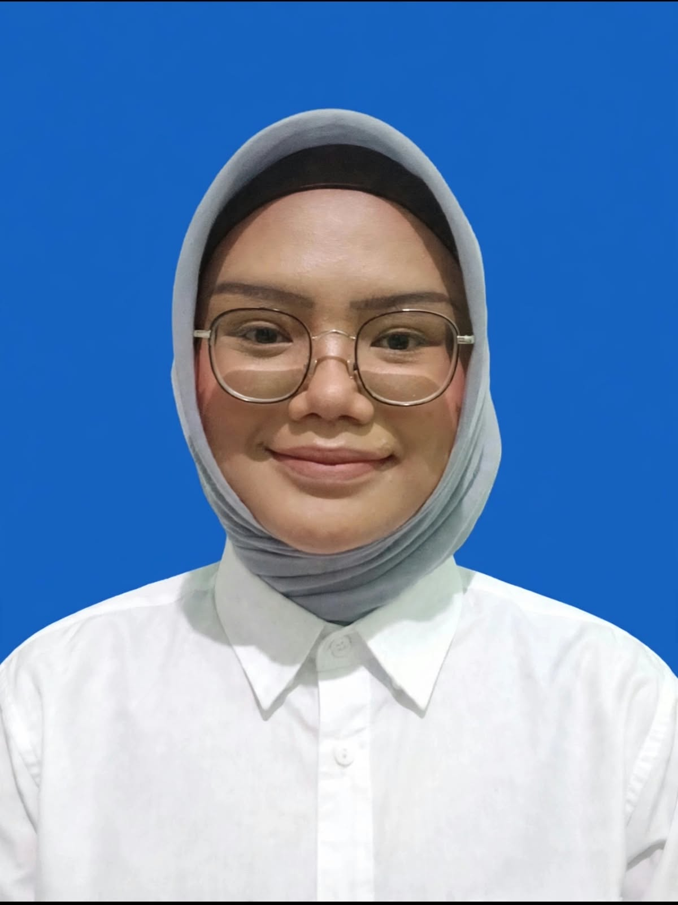

Visi
Menjadi pribadi yang memiliki kemampuan dan pengetahuan dalam bidang teknologi informasi.

Saya Zafira Paras, mahasiswa jenjang S1 program studi Sistem dan Teknologi Informasi. saya tidak memiliki keahlian dibidang yang saya ambil sebenarnya, saya hanya tertarik pada dunia teknologi bermodalkan dari ketertarikan itulah saya memberanikan diri mengambil program studi tersebut saya belajar semuanya dari NOL. Saya merasa cukup strunggling berada di prodi ini namun saya tetap berupaya belajar semampu yang saya bisa.
Menjadi pribadi yang memiliki kemampuan dan pengetahuan dalam bidang teknologi informasi.
Kemampuan yang sedang saya asah beserta alat yang saya gunakan.
| Keahlian | Alat | Tingkat |
|---|---|---|
| HTML dan CSS | Visual Studio Code | Pemula, ingin belajar |
| JavaScript | Visual Studio Code | Pemula, ingin belajar |
| Desain antarmuka (UI) | Figma | Pemula, ingin belajar |
| Desain grafis | Canva | Pemula, ingin belajar |
Saat ini saya menempuh pendidikan tinggi di Universitas Pertiba mengambil Program Studi Sistem dan Teknologi Informasi.
Saya bersekolah di SMP N 1 PAYUNG dan saat itu belum mengenal dunia teknologi dan informasi.
Saya bersekolah di SMA N 1 PAYUNG dan saat itu saya mulai mengenal dan tertarik pada dunia teknologi.